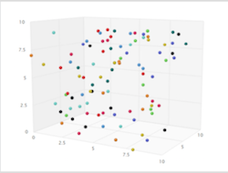
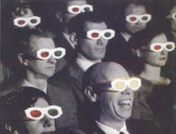
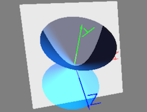
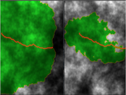

Green Leaves
A buisiness-to-business web application for wholesaling Asian produce,
featuring a MERN stack.
Under construction 🏗️
Under construction 🏗️
City Match
In a world of options, can big-data expand our awareness to help
find that viable place where we'll feel most at home given our
resources?
Find your city.
Find your city.

City Rank
A full-stack app to rank livable cities along 3-dimensions of preference.
This two-week group project is the inspirational precursor to City Match.
This two-week group project is the inspirational precursor to City Match.

Quiz Time ⏰
Match wits against the clock in this fast-paced trivia game.
Supports the Open Trivia Database schema enabling support for up to 24 categories and thousands of questions.
Supports the Open Trivia Database schema enabling support for up to 24 categories and thousands of questions.
Word Stop 🛑
My scalable take on the game of hangman with selectable themes.
Features a model view controller pattern, object oriented design, JSON-based lexicons, and mobile friendliness.
Features a model view controller pattern, object oriented design, JSON-based lexicons, and mobile friendliness.

Conic Sections
A lonely plane intersects with a double-sided cone and the
rest is ancient mathematical history.
Except let's modernize things with OpenGL and mutable visual objects to build intuition with something immersive and interactive.
Except let's modernize things with OpenGL and mutable visual objects to build intuition with something immersive and interactive.
OpenGL Ascent
Ready to take on graphics and the OpenGL tech adventure?
Start with my annotated guide to one of the more popular online tutorials, thoughtfully provisioned with build dependencies and the debug strategies needed to reach the summit.
Start with my annotated guide to one of the more popular online tutorials, thoughtfully provisioned with build dependencies and the debug strategies needed to reach the summit.

Abstractions with C++
Reconnecting with my programming fu.
Traverse a popular programming abstractions course chock full of accessible rigor and 200,000 lines of my most adequate C++ code.
Image: Dijkstra's Search and A* Search
Traverse a popular programming abstractions course chock full of accessible rigor and 200,000 lines of my most adequate C++ code.
Image: Dijkstra's Search and A* Search
Javascript by Example
An unapologetically retro traversal of javascript under the guidance of Ellie Quigley.
I've since moved on to embrace JS's more modern and functional features, but this book is part of my journey.
I've since moved on to embrace JS's more modern and functional features, but this book is part of my journey.